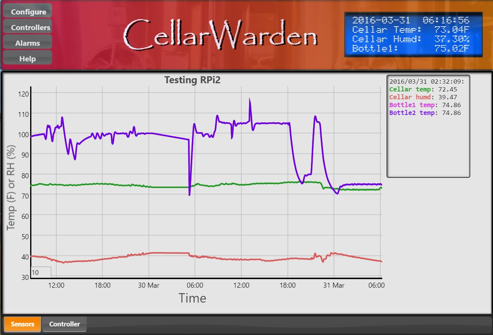

The main window in CellarWarden presents information about the status of sensors and controllers that have been set up and provides a means to configure the server that operates in the background on the Raspberry Pi. The main window is broken into two parts, the banner at the top and the graph window that displays logged data.
CellarWarden presents a banner at the top of the main window showing buttons that allow configuration of CellarWarden, the title and a virtual LCD display.
Buttons
Configure: Opens the Configuration Dialog to configure overall operations of CellarWarden.
Controllers: Opens up the Controllers Dialog to allow configuration of each controller.
Alarms: Click this to configure alarms using the Alarms Dialog.
Help: Click this to open the CellarWarden help pages.
A virtual LCD display is shown at the right of the banner and provides realtime updates of the status of CellarWarden. This displays the same information as a hardware LCD display if one is connected to the Raspberry Pi. If no controllers are active, this display only shows a single page.
LCD Page 1:
This page shows the current date and time, the temperature and humidity values from DHT1 (a temperature/humidity sensor), and the temperature detected on onew1, a DS81B20 1-wire temperature probe. When CellarWarden is first started, this bottom row will show the IP address of the server for one minute. If an Alarm has been triggered, the bottom row will instead indicate that an Alarm has been triggered until the Clear Active Alarms button is pressed (more information about this is available in the Alarms dialog).
LCD Page 2, etc.:
If one or more controllers are active, CellarWarden will display the status of each active controller by toggling the page, showing each controller in round-robbin fashion as well as LCD page 1...
Row 1: Displayed here are the controller number (Ctrl 0) and the name of the controller (Fermentor 1).
Row 2: The input (process variable/PV) and the name of the primary sensor (onew1) are displayed.
Row 3: The setpoint (SP) and output (OutP) are shown. OutP designates that this controller is using PID mode, whereas a controller using Hysteresis mode will display OutH.
Row 4: The status of the controller is shown here. In this case, the controller is heating. This row may also display- Cooling, Humidifying, Dehumidifying, Waiting to Heat, Waiting to Cool, Waiting to Humid., Waiting to Dehumid. The latter 4 status messages indicate that an actuator on the controller has been set with a delay to prevent rapid cycling and is waiting for the delay to elapse before engaging the actuator. The status line will show the prefix "AH" or "AC" if the heating/humidifying or cooling/dehumidifying actuator is being autotuned, respectively.
The graph section is tabbed, and allows viewing of the Sensors graph and the Controller graph. The Sensors tab opens the main graph window, and the Controller tab shows logged data for a selected controller.
Displayed is a graph of all active sensors, including DHT-type temp/humidity sensors, DS18B20 1-wire sensors and door switches. Also, annotations marked by a small box enclosing a number next to a specific plot line indicate an alarm has been triggered for that sensor.
Legend
A legend is shown at the top right of the window if the mouse pointer is placed over the graph. This will display the date/time and various sensor values for the selected time. Note that data will only be plotted for active sensors. Door open/close events are shown near the bottom of the plot. If the mouse pointer is moved off of the graph window, the legend is hidden.
The Roll WindowA small input box to the bottom left of the graph is the Roll Window...
This applies a rolling average to the displayed data, and defaults to 10, meaning that each displayed data point is the rolling average over 10 samples. Set this to 1 to show unaveraged results.
Controller Banner
The Controller window shows logged data on a selected controller. The banner at the top of this window allows a means to select a specific controller using a dropdown menu...
Filename: Shows the filename associated with the selected controller.
Sensor: Displays the primary sensor name for this controller.
Status: Shows if the controller is active or inactive.
Profile: Displays the name of the Profile if it has been loaded for this controller. Also shows if the profile is running or stopped (Stopped).
Legend:
Shows the time/date, the input (process variable), the setpoint and the output value for the heating/humidifying or cooling/dehumifying actuator on the selected controller.
The Roll Window:
As with the Sensors window, the graph in the Controller window has a roll window box. This defaults to 1 to show unaveraged values for the controller. This may be set to > 1 to apply a rolling average, however note that this may make it appear that cooling and heating actuators are active at the same time near crossover points (periods in which the input/PV crosses the setpoint line). This is merely an artifact of averaging as the heating/humidifying and cooling/dehumidifying actuators cannot be active simultaneously.